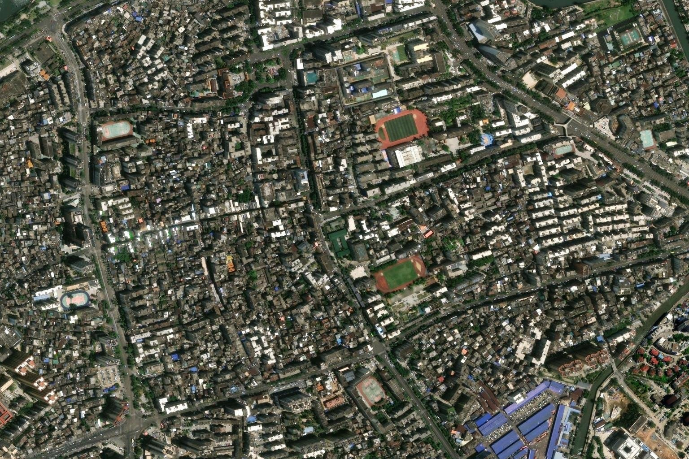

A SCHOOL THAT REMEMBERS
A JOURNEY TOWARDS HOME
从一颗星球，
到一处树荫。
距离慢慢缩短，
一个地方，慢慢有了名字。
读取本地地理影像…
01 / PLANET
在同一颗星球上。
镜头朝向海南，保持同一处地理焦点。
YOU HAVE ARRIVED
现在，
把脚步交给你。
三维校园正在准备…
单独打开校园 ↗Imagery © Esri, Maxar, Earthstar Geographics, GIS User Community地理影像 → 近似校园模型 · 非实时影像